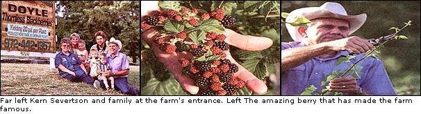
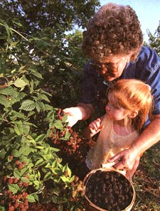
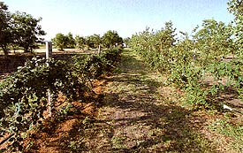
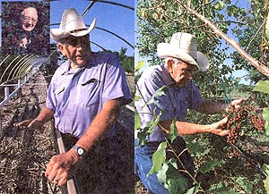

The Doyle Thomless Blackberry:
The most prolific berry in the world.
On an average day you could have some coffee with us at about 6 A.M. and listen to the. weather report. After breakfast Mary would probably go out to the greenhouse to check the berry plants and set aside those ready for shipping later in the day.
While Mary is busy in the greenhouse, I usually head down to the berry orchard. There's always a lot of mowing and machinery repair to be done, but first thing daily I check the drip watering system, tie up new berry canes and mulch wherever needed. We mulch our berries with compost to about one-and-a-half feet on each side of the rows to a depth of four or five inches. For a smaller garden, I would mulch with finished compost in a three or four foot diameter around each plant. Also, watering with the hose is fine for just a few plants, keeping the soil moist at all times, but never wet. Once a week we foliar feed our berry plants from a 150-gallon spray rig, which I pull with the tractor. Blackberries respond well to foliar feeding, a method that entails spraying the leaves with a fertilizer. This can be done with a handheld spray bottle on smaller gardens. We use two or three kinds of very effective organic fertilizer, including Bio-Organics and Medina. They are available here at the farm, as well as through our Web site: www.fruitsandbenies.com.
Our Farm History
Severtson Farms has not always been in Texas. As long ago as 1850, my great grandfather homesteaded in Story County, Iowa. The original Severtson Farm, the forerunner of our current operation, was in Boone County, Iowa, near the little town of Luther, where my six brothers and sisters and I went to church and school. It was a wonderful place to work and live. Like most farmers during the 1930s and '40s, we milked cows, raised hogs and chickens and farmed with horses until after World War II. We lived close to the land, raising a large garden and gathering lots of wild fruits. Mom canned about 2,500 quarts of food every year for our family of nine.
In the fall, we would all go to the woods to pick June berries, raspberries, chokecherries, gooseberries and a wagonload of fall nuts. Those were such fun times; Dad would hitch up the team, Mom would fry three or four chickens, making a picnic dinner fit for a king, and we would all pile into the wagon for a big day of work and play.
Time, however, didn't stand still for us. Each of us left home to pursue various careers. I became a school administrator in Iowa, but continued to manage the farm. Mary and I spent summers there with our children, teaching them many of the values we learned as kids so many years ago. We raised a lot of alfalfa hay and, of course, baled until we dropped nearly every day. But this all had to stop when I became associate superintendent of Paradise Valley Schools in Phoenix, Arizona. It was a sad day when we sold the farm, but the buyer was the Iowa State 4-H Camp. We hope and trust that the kids who go there now enjoy it as much as we and our children did when it was Severtson Farms.
The Doyle Blackberry
These days our farm sign reads "Doyle Thornless Blackberries: Yielding 20 gal. per Plant." Some folks will stop by out of pure curiosity, because that does sound like a whopper, but when they go out to the berry orchard with us they quickly see the truth of the matter. I must confess that we thought the same thing when we first saw Tom and Louise Doyle's ad in a farming magazine nearly ten years ago. We were sure it was a misprint and that instead of 20 gallons they probably meant two gallons, which still would be an enormous yield for any blackberry plant. At the time, we bought 100 plants from the Doyles at a cost of about $20 each.
Along with the plants came some literature on the Doyle, and we were impressed by what we read about this wonderful blackberry. In 1970 Tom found a plant growing in his garden with a bunch of berries on it in numbers he had never seen before. Purdue University took a look at it and discovered that this berry always propagated true, not reverting to thorns as some "thornless" varieties do. Tom and Louise worked with this blackberry for several years and began to measure the unusually large yield of the Doyle. And yes, it truly did yield 20 gallons, which several newspapers would later attest to.
In fact, the Agriculture Hall of Fame at Bonner Springs, Kansas, was so impressed with the Doyle that it had the plant on display for several years. After many years, Tom secured his patent and set out to get his blackberry's awesome yield recorded in the Guinness Book of World Records. So far that hasn't happened, but Mary and I might well take up Tom's dream. By 1994 we had purchased the exclusive rights to propagate and market the Doyle Blackberry from the Doyles themselves. It might be fun to have a national contest for the thousands of customers we have throughout the nation and abroad to see who can harvest the greatest yield for the Guinness record. Tom will be 100 years old in June of 2000. Wouldn't it be some kind of birthday gift for him to see that accomplished?
There are dozens of different types of blackberries, but all of them have a two-year cane or vining process. One year the vine-like stem of the berry plant simply grows and develops, and the next year it blooms and produces berries. When a cane has finished bearing it will die, which is why we recommend to all of our Doyle customers that the cane be cut out immediately after bearing so that all of the plant's energy will go into the new canes.
Ordinary blackberries come in two categories: thorn and thornless. Generally speaking, the thorn varieties are called "erect" because they have a stiffer cane that grows upright but still needs support for best results. The thornless types are called "trailing" and have a more vine-like habit that needs support on a post, fence or trellis. All blackberry plants yield more when the canes are tipped or trimmed. To "tip" a plant, just cut about an inch off the very end at the proper time. Ordinary berry plants will produce an optimum of about 50 to 75 linear feet of laterals or branches during a good season. These canes then produce small groups of one to five berries all along the vine.
The Doyle, by contrast, will produce 250 to 300 linear feet of laterals, with large bunches of berries every two to eight inches for the entire length. Looking very much like grapes, several bunches should have nearly 100 berries. This large amount of fruit is not the product of one long vine, but many shorter laterals or canes. Typically there are four to seven main canes on each mature Doyle plant, which we tip once they reach ten to 12 feet in length.
For best planting results, we suggest digging a hole about two feet in diameter and about eight inches deep. Mix about 50"/o compost with the dirt from the hole and fill back in around the berry roots, pressing firmly and watering deeply. Plants should be planted about six or seven feet apart. Keep in mind that blackberries are heavy feeders and love lots of rich aged compost, both worked into the soil around the plants and left on top. Springtime is the best time of year to plant the Doyle.
We recommend growing the Doyle either on a seven-foot post or on a fence. For a small yard or garden, a post is very effective. Tie the canes to the post as they grow until they reach the top, then tip the canes. The plant will then form laterals, which will cascade down around the post. In spring these laterals will have hundreds of blossoms resembling large lilac flowers and soon thereafter large bunches of sweet juicy berries will form.
With just a little extra care, folks in zones 3 and 4 can grow this wonderful plant, as can gardeners in the hot climates of the Southwest. In the North, gardeners should cover the canes in case of an early cold snap, if the temperature drops sharply lower than -20°F to -25°F before plants have a chance to harden off for winter. The covering can be compost about six inches deep and maybe some plastic over that. Don't worry about covering the leaves because they will fall off anyway.
Those in high heat areas need to provide afternoon shade and lots of water. To ensure proper shade, folks in thus type of climate should plant their berries on the east side of their house or next to a wood fence. Mulch in these areas is also critical for conserving moisture. As with any plant, the care you give your Doyle will largely determine its success.
The Doyle is surely the most economical berry in the world. To match the yield of just one Doyle plant you'd have to buy 30 to 50 ordinary berry plants.
You can contact the Severtsons to order your own Doyle Blackberries at their Web site.
|
 Granddaughter Maddie helps Mary Severtson bring in the harvest. |
 Left: Tom Doyle, the father of our prolific berry. Right: Here I am holding another amazing large bunch. |
 |
|
 |
|
|